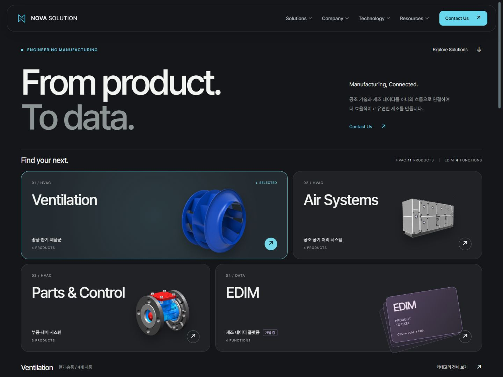
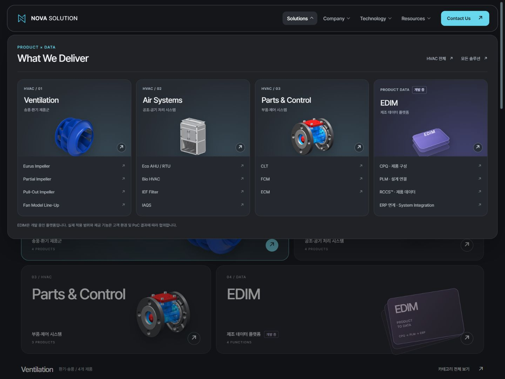

Prism Launcher — 1차 구현
선택한 프리즘 런처 시안을 바탕으로 홈, Solutions, HVAC 진입 화면과 공통 탐색 기능을 구현했습니다. 다음 단계는 제품 상세와 회사·기술·자료실·문의 화면의 디자인 확장입니다.
이번 변경
| 영역 | 구현 |
|---|---|
| 홈 | 강제 슬라이드 전환을 자연스러운 세로 스크롤로 변경. 비대칭 4개 카테고리 카드, 15개 제품·기능 미리보기, 실제 상세 링크, 포인터 조명과 작은 기울기. 기존 한국어 본문과 여섯 섹션의 앵커 유지. |
| 카탈로그 | Solutions의 원본 15개 카드, HVAC 11개 제품 보존. 자동 이동 캐러셀을 전체 제품 그리드와 제품군 필터로 변경. 필터로 가려진 앵커 이동 시 전체 목록을 복원. |
| 공통 메뉴 | HVAC 3개 제품군과 EDIM을 시각적으로 강조. 기존 메뉴 목적지 40개 유지. 모바일 대화상자, 배경 비활성화, 포커스 순환·복원, Escape, 키보드 탐색. |
| 자산 | 벡터 로고 적용. 공식 Pretendard 1.3.9 가변 WOFF2를 로컬에서 제공하며 font-display:swap 사용. SIL OFL 라이선스·출처·해시 포함. |
| novascroll | 문서·메뉴·회사 모달의 네이티브 스크롤 위에 표시. 공간 점유 없음. 마지막 활동 1600ms 후 숨김 시작(180ms 전환). 드래그·키보드 지원, 넘침 없는 축 제외, 실패 시 네이티브 표시 유지. |
| 빌드 | 새 CSS/JS와 폰트·라이선스 복사 및 SHA 버전 적용. 입력 검증 후 dist 생성. Windows 경로·junction 보호. 공유 헤더 생성 스크립트의 Windows URL 경로 처리 수정. |
검증 결과
- 11개 페이지의 로컬 링크·앵커·이미지·ARIA 참조 검증 통과. 기존 상세 8페이지 main 본문이 보존본과 동일합니다.
- 고정 snapshot 62개 파일의 SHA-256, 크기, 목록 유지.
- 홈 15개 제품·기능의 선택 상태·이미지·목적지, 카탈로그 필터, 메뉴 키보드와 모바일 포커스 확인.
- KAD/KAP/KAS 사양 전환, CLT 100A 모델과 정면 시점, 회사 메뉴에서 About 모달 열기·닫기, 문의 유형별 선택지 확인. 실제 문의는 전송하지 않았습니다.
- 320·390·768·1440px 화면 확인. CLT 장식 이미지가 만든 모바일 가로 넘침 수정.
- novascroll 실제 포인터 드래그로 5%→26% 이동. 모바일 메뉴 키보드 End로 100% 이동. 비활성 후 표시 클래스 해제는 도구 측정 약 1654ms(설정 1600ms).
- 배포 산출물 11 HTML·9 공통 CSS/JS·31 자산 생성 및 로컬 브라우저 확인. 누락 자산·잘못된 경로·junction 관련 빌드 회귀 검사 통과.
검증 브라우저는 Codex 내장 Chromium입니다. 실제 기기·다른 브라우저, OS 모션 설정 변경, JavaScript 강제 비활성화는 이번 브라우저 검사에 포함하지 않았습니다. 모션 감소와 실패 시 폴백은 소스에서 확인했습니다. EDIM 개발 상태와 기존 성능·특허 주장의 검증 수준은 변경하지 않았습니다.
화면



작업 상태
브랜치 codex/prism-launcher-renewal. 이번 변경은 로컬 작업 파일에 있으며 커밋·푸시·운영 배포를 진행하지 않았습니다. 원본 보존 문서는 수정하지 않았습니다.
재검증: node scripts/build-pages.mjs 17940ae, node scripts/verify-build-pages.mjs, python docs/renewal/prism-phase-1/static-verify.py.